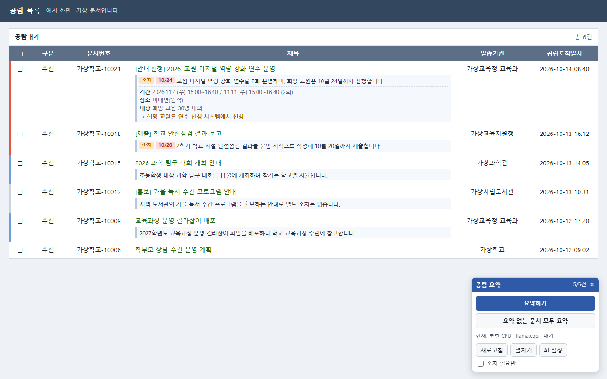

공람문서, 제목만 보지 말고 요약으로 고르세요
K-에듀파인 공람 목록의 문서마다 요약·조치·기한·대상을 붙여 드립니다. 요약은 내 PC 안에서 만듭니다.
- Windows PC + Chrome
- 관리자 권한 필요 없음
- 17개 시도교육청 K-에듀파인
- 설치 3단계, 약 5분

설치
-
Chrome에 확장 추가 웹 스토어 심사 중
Chrome 웹 스토어에서 KLEF 공람문서 요약을 열고 [Chrome에 추가]를 누릅니다.
Chrome 웹 스토어 열기심사가 끝나기 전에는 스토어 페이지가 열리지 않습니다. 그동안은 ZIP으로 설치하세요.
충북 외 시도교육청: 다른 지역 주소는 1.8.4부터 들어 있습니다. 웹 스토어 판이 1.8.4로 바뀌기 전에는 공람 목록에 패널이 뜨지 않으니 ZIP으로 설치하세요.
-
PC 도우미 설치
요약은 PC에서 도는 도우미가 만듭니다. 설치 파일을 받아 실행하세요.
도우미 설치 파일 받기 (Windows)"Windows의 PC 보호" 창이 뜨면
추가 정보를 누르면 아래에 실행 버튼이 나타납니다. 그 버튼을 누르세요. 코드 서명을 하지 않은 무료 배포 파일이라 뜨는 창입니다.설치 중에 검은 창이 잠깐 열려 필요한 파일(약 115MB)을 받습니다. 1~3분 걸립니다. 설치가 끝나면 확장이 필요할 때 도우미를 알아서 켭니다.
-
요약 모델 받기
한 번만 하면 됩니다.
K-에듀파인 공람 목록→공람 요약 패널→AI 설정→내 PC→이 모델 준비하기
기본 모델은 약 1.4GB입니다. 준비 완료가 뜨면 끝입니다. 이후로는 인터넷 없이도 요약합니다.
이제 공람 목록에서 문서를 체크하고 [요약하기]를 누르세요. 체크하지 않고 [요약 없는 문서 모두 요약]을 누르면 화면의 문서를 한꺼번에 처리합니다.
문제 해결
설치 파일 실행이 막혀요 / 웹 스토어가 아직 안 열려요
기관 정책으로 exe 실행이 막혔다면 ZIP으로 설치할 수 있습니다.
- 최신 릴리스에서
klef-worker-버전.zip을 받아 압축을 풉니다. - 압축 푼 폴더의
설치.cmd를 더블클릭합니다. - 웹 스토어 확장을 쓸 수 없으면
chrome://extensions에서 개발자 모드를 켜고, 압축 푼 폴더 안의extension폴더를 불러옵니다. 이때는시작.cmd로 도우미를 켜 둡니다.
개발자 모드가 기관 정책으로 막혀 있다면 우회하지 말고 관리자에게 문의하세요.
"로컬 도우미 응답이 없습니다"가 떠요
- 2단계 설치 파일을 다시 실행하세요. 업데이트처럼 덮어쓰고 기록은 그대로 둡니다.
- 시작 메뉴의 KLEF 공람문서 요약 → KLEF 도우미 직접 켜기로 켤 수도 있습니다. 그 창에 뜨는 메시지가 원인을 알려 줍니다.
- Chrome과 공람 페이지를 새로고침한 뒤 다시 시도하세요.
공문이 밖으로 나가나요?
기본 설정에서는 공문과 요약이 PC 밖으로 나가지 않습니다. 개발자가 운영하는 수집 서버나 이용 추적은 없습니다. 외부 AI API는 직접 설정하고 전송에 동의한 경우에만 씁니다. 자세한 내용은 개인정보처리방침을 보세요.
지우고 싶어요
Windows 설정 → 앱에서 KLEF 공람문서 요약 도우미를 제거하고, Chrome에서 확장을 삭제합니다. 도우미 폴더(받은 모델·요약 기록 포함)는 함께 지워지고, 다운로드\KLEF에 저장된 공문은 남습니다.